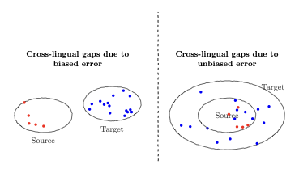
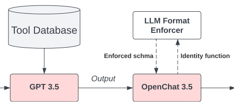
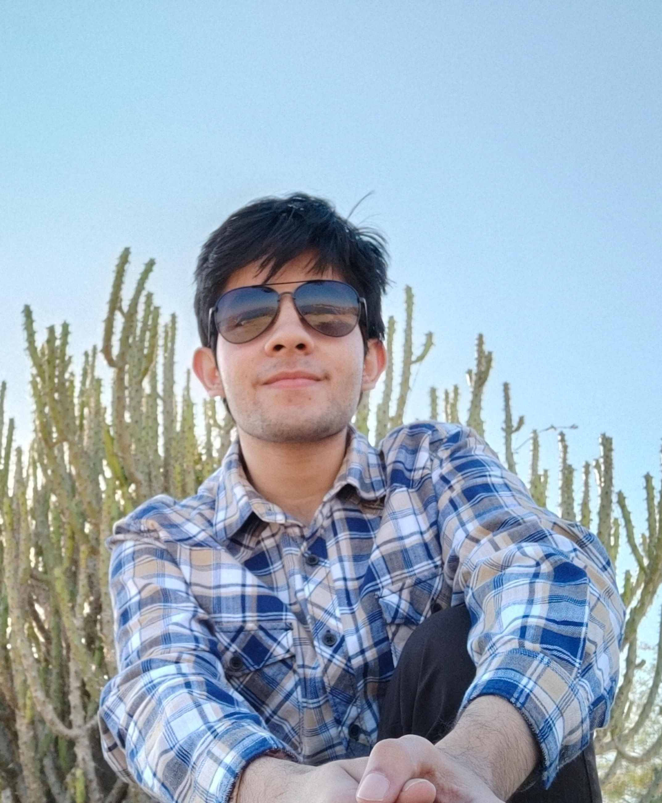

Research
Publications



FlatTrack: Eye-tracking with Ultra-thin Lensless Cameras
GMCV Workshop @ WACV 2025 ★ Best Paper Award


Research Fellow at Google DeepMind, Bangalore
I am a Research Fellow at Google DeepMind, working with
Partha Talukdar.
My research focuses on understanding and closing cross-lingual and cross-modal gaps
in large language models, as well as efficient multimodal reasoning.
Previously, I was an ML Engineer at Sarvam.AI, where I built speaker diarization
systems, VLM-based OCR pipelines, and pre-training data infrastructure for 30B–105B
sovereign language models. I hold a B.Tech (Honours) + M.Tech in Electrical Engineering
from IIT Madras, with minors in AI/ML and Mathematics.
Updates
Research

FlatTrack: Eye-tracking with Ultra-thin Lensless Cameras
GMCV Workshop @ WACV 2025 ★ Best Paper Award

Career
Google DeepMind · Bangalore
Working with Partha Talukdar on cross-lingual and cross-modal evaluation of frontier LLMs. Proposed a bias-variance decomposition framework for understanding cross-lingual gaps (NeurIPS 2026 submission), built a diagnostic framework for audio–text performance gaps in Gemini Live with targeted post-training fixes, designed a scalable benchmark for tracking agentic and STEM reasoning across languages (EMNLP 2026 submission), and currently researching latent thought compression and multimodal reasoning for GeminiOmni.
Sarvam.AI · Bangalore
Built speaker diarization systems on NeMo MSDD with TitaNet embeddings, served via Triton with TensorRT FP16 engines and FAISS speaker caching. Developed VLM-based OCR pipelines for degraded Sanskrit and Indic manuscripts using finetuned Qwen-VL (AWQ 4-bit) served via SGLang with RadixAttention prefix caching. Co-engineered the core pre-training data pipeline for Sarvam's flagship 30B and 105B sovereign language models with GPU-accelerated deduplication (NeMo Curator + RAPIDS) and fault-tolerant WebDataset pipelines streaming trillions of tokens. Researched multimodal pre-training strategies including resolution-adaptive tokenization.
Academic
AI4Bharat, IIT Madras · Guide: Prof. Mitesh Khapra
Designed Motion-UNet2D with frame-wise cross-attention from HuBERT encoder for audio-driven lip-sync. Curated a 300-hour talking-face dataset (2.59M clips, 2500+ identities) including a 15-hour Indic language extension. Introduced differentiable key-point loss using 468 MediaPipe landmarks with focused lip-region masking. Outperformed state-of-the-art baselines (Wav2Lip, MuseTalk) on lip-sync quality and temporal consistency. Also built a UMMAFormer-based temporal anomaly detector leveraging Video Masked Autoencoders for deepfake detection.
Computational Imaging Lab, IIT Madras · Guide: Prof. Kaushik Mitra
Built a real-time lensless eye-gaze tracker achieving 125+ fps inference with sub-degree angular accuracy on hardware. Collected 20,000+ unique eye-gaze captures using a custom NIR–Phlatcam setup. Designed a two-stage physics-inspired model combined with a U-Net pipeline for lensless image reconstruction. Published as FlatTrack at WACV 2025, winning the Best Paper Award at the GMCV Workshop co-sponsored by Google DeepMind. Explored advanced driver-assistance applications leveraging the compact and privacy-preserving lensless form factor.
RIT, New York & ISB Hyderabad · Guide: Prof. Ashique & Prof. Sumeet
Investigated relational features and ideology polarity signals to improve stance classification on Indic language tweets. Designed and evaluated Active Learning query strategies on the TiMME dataset comprising 1.6M Twitter user profiles.
University of Illinois, Urbana-Champaign · Guide: Saipraneth Devnuri
Introduced CrackSeg-9K, a 10,000+ pixel-level annotated image dataset for infrastructure crack segmentation. Improved segmentation using self-supervised DINO backbone features as semantic priors for crack detection.
Logistics and Innovation Lab, IIT Madras · Guide: Prof. NS Narayanaswamy
Modelled driver distraction detection as an open-set recognition problem using contrastive representation learning. Engineered an ensemble deep learning system for advanced driver-assistance, improving unsafe behaviour detection. Built an end-to-end Computer Vision pipeline with Tesseract OCR for automated vehicle and driver info extraction.
Beyond Research
Teaching Assistant at IIT Madras:
• EE5178 Modern Computer Vision (Spring 2025)
• EE5176 Computational Photography (Fall 2024)
• CS6370 Natural Language Processing (Spring 2024)
IIT Madras
Co-Founded the committee in its inaugural year, recruited and managed a 15-member team. Partnered with No Food Waste NGO to recover surplus food from campus, feeding 400 individuals daily. Mobilized 120 volunteers for a Beach Cleaning Drive and spearheaded 5+ campus sustainability programs.
Centre for Innovation, IIT Madras
Engaged 300+ students through AI tutorials, summer bootcamps, and inter-collegiate hackathons. Built a Paper-Archive of research papers with code and collaborated with Univ.ai on the Geoffrey Hinton Fellowship Program.
Beyond research, I am a nature enthusiast with a deep appreciation for plants and animals. I enjoy exploring forests, lakes, and hill stations, as well as immersing myself in history and culture by visiting historical and spiritual sites. In my free time, I find joy in arts, crafts, and origami. I also enjoy watching anime and reading manhwas. I am always open to discussions or collaborations — feel free to reach out!
Click the button below!